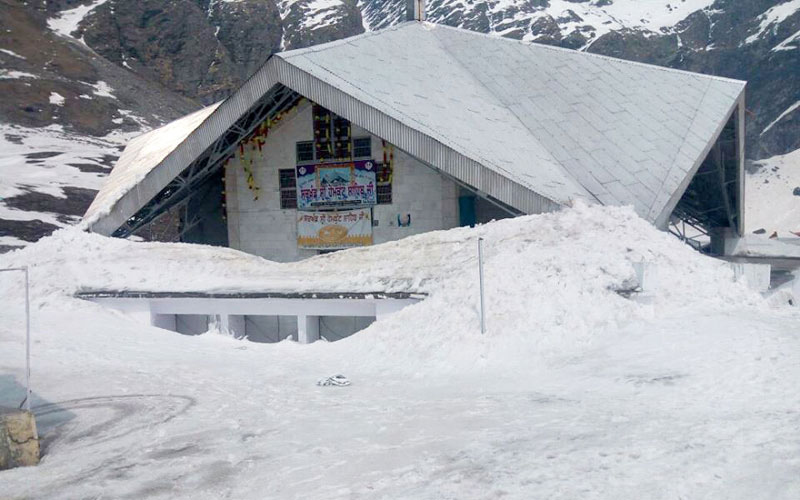
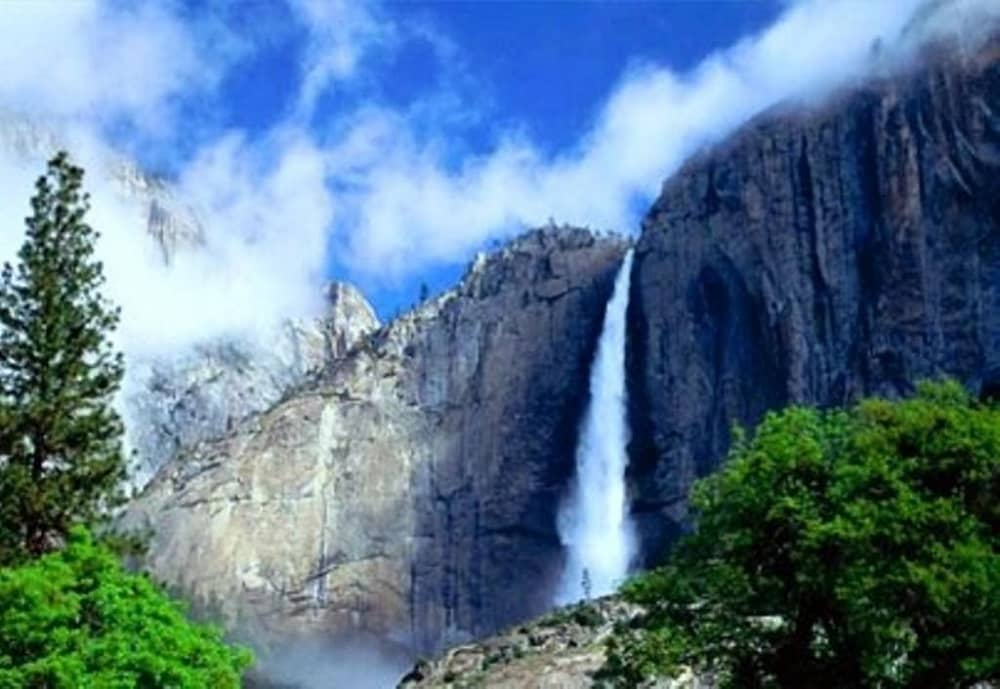
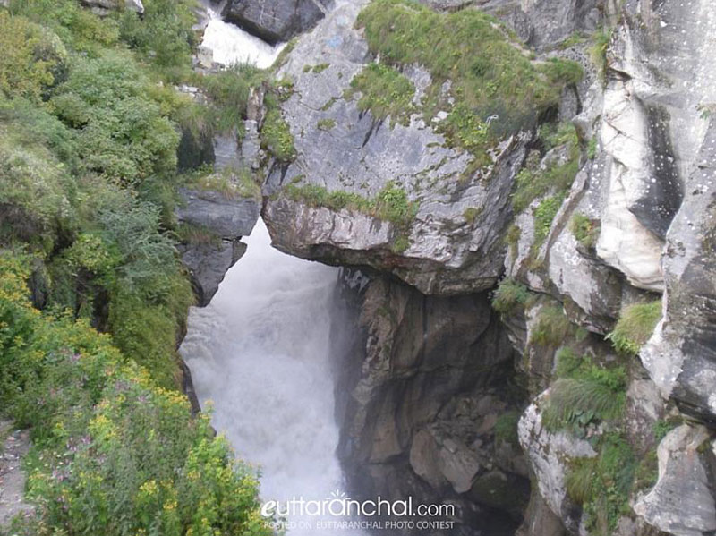

Hotel Under Rs.500-Rs.1000
GMVN Badrinath Tourist Rest house
GMVN Tourist Bungalow Devlok Badrinath
Hotel Patliputra
Jagirdar Guest House
SS International
Hotel Under Rs.1000-Rs.2000
Hotel Dwarikesh
Bhajan Ashram
GMVN Badrinath Tourist Bungalow Devlok
Hotel Under Rs.2000 & above
New Hotel Snow Crest
Hotel Narayan Palace
Hotel Sarovar Portico
Badri Villa Resort
Narayan Palace
Badri Retreat
ATTRACTIONS

Hemkund Sahib

Hemkund Sahib (also spelled Hemkunt), formally
known as Gurudwara Shri Hemkund Sahib Ji, is a
Sikh place of worship and pilgrimage site in Chamoli
district, Uttarakhand, India.It is devoted to Guru
Gobind Singh (1666–1708), the tenth Sikh Guru,
and finds mention in Dasam Granth.
Hemkund Sahib is the Gurudwara situated at the
highest altitude of 4329 mts. It is located in the
Chamoli district of Uttarakhand near Valley of Flowers.
This holy shrine got its name from the glacial
lake Hemkund, adjacent to the Gurudwara whose
literal meaning is the ‘Lake of Snow’.
This pilgrimage place of Sikhs is dedicated to the
tenth Sikh Guru, Sri Guru Gobind Singh Ji (1666-1708)
and also finds its mention in Dasam Grant, a work
dedicated to Guru Ji himself.

Vasudhara Fall
'Vasu' refers to Lord Vishnu's Vasudeva. Dhara (river in
Sanskrit) means "path of the river", so "the path of Lord
Vishnu".
The water of this spring does not touch the body of
sinners. For this reason, Hindus take the water of this spring
with them. Sinners should stay away. It is said that if the holy
water of this spring starts falling on you, then you are a
virtuous soul. The one on whom it falls is considered to be
entitled to salvation and because of this, devotees stand under
this holy waterfall. This spring is considered to have a flavor
like nectar because its water has been enriched by Ayurvedic
herbs, such that the person on which its water falls becomes
healthy. Hindus keep holy water at their homes to use in
religious practices

Bheem Pul
Bheem Pul is located in Mana, the last village located on the
border with Tibet. It is 3 km from Badrinath and is built over
Saraswati River. As per the Mythology, When Pandavas were
walking for Swarga (heaven), this path was followed, from
Badrinath temple to heaven, it’s called SWARGAROHANI
and for Draupadi to cross the Saraswati River, Bheem brought
this big Shila and placed it above Saraswati stream in such a
manner that it became a bridge. This is a single stone and
placed perfectly and its shape is such that it would not
--------
----- °c
-------